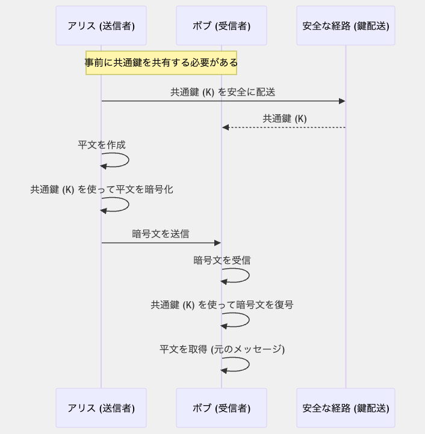
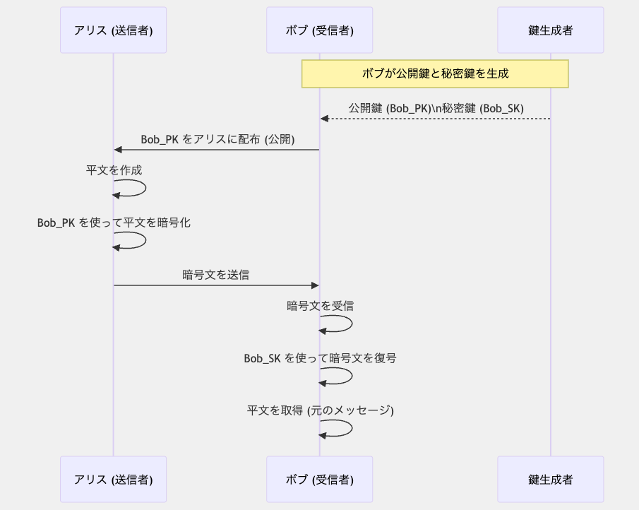
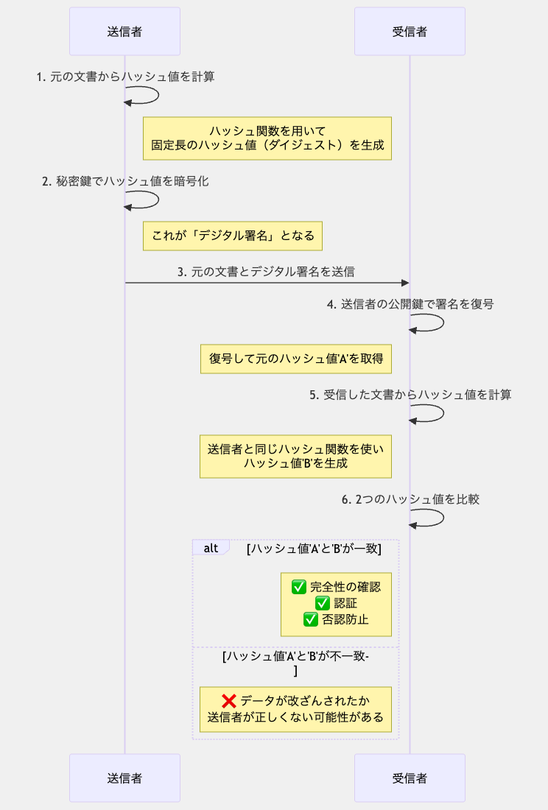
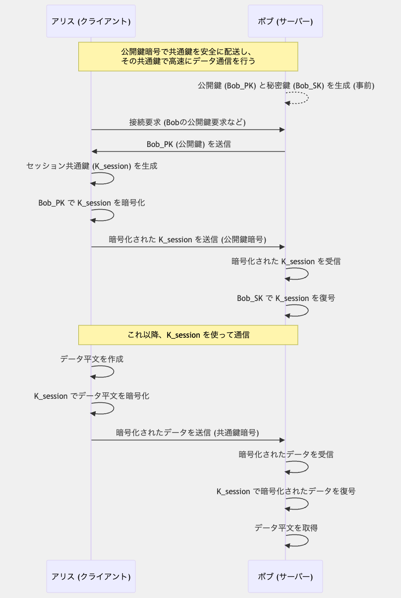

暗号化鍵は、データを安全に保護するための重要な要素です。 このページでは、様々な種類の暗号化鍵とその用途、仕組みについて解説します。 暗号化技術は現代のセキュリティシステムの基盤となっており、インターネット通信、データ保護、認証など多くの分野で利用されています。
暗号化とは、情報を第三者に読み取られないように変換するプロセスです。 暗号化されたデータは、適切な鍵を持つ人だけが元の情報に戻すことができます。 暗号化は、機密情報の保護、通信の安全性確保、データの完全性検証などに使用されます。
暗号化の歴史は古代にまで遡ります。初期の暗号は文字の置き換えや並べ替えなどの単純な方法でした。 例えば、古代ローマのシーザー暗号は、アルファベットを一定数ずらすという単純な方法でした。
現代の暗号化は、コンピュータの発展とともに複雑化し、数学的アルゴリズムに基づいた強力な暗号方式が開発されています。 第二次世界大戦中のエニグマ暗号機の解読は、現代暗号学の発展に大きく貢献しました。
暗号化鍵は、暗号化アルゴリズムと組み合わせて使用される秘密の値です。 鍵は、暗号化と復号のプロセスを制御し、同じアルゴリズムでも異なる鍵を使用することで異なる結果を生成します。
暗号化鍵の主な役割は以下の通りです：
暗号化鍵の長さは、暗号化の強度に直接関係します。鍵が長いほど、総当たり攻撃（ブルートフォース攻撃）に対する耐性が高まります。
例えば、128ビットの鍵は2128（約3.4×1038）の可能な組み合わせがあり、現在のコンピュータ技術では総当たり攻撃は現実的ではありません。 一般的に使用される鍵の長さは以下の通りです：
コンピュータの処理能力の向上に伴い、推奨される鍵の長さも徐々に増加しています。 セキュリティ要件に応じて適切な鍵の長さを選択することが重要です。
暗号化鍵の管理は、セキュリティシステム全体の中で最も重要な要素の一つです。 適切な鍵管理がなければ、どんなに強力な暗号化アルゴリズムも意味をなしません。
鍵管理の主な側面には以下があります：
共通鍵暗号方式（対称暗号方式）は、暗号化と復号に同じ鍵を使用する暗号化システムです。 送信者と受信者は事前に安全な方法で同じ鍵を共有する必要があります。 この方式は、公開鍵暗号方式と比較して処理速度が速く、大量のデータを効率的に暗号化できます。
共通鍵暗号方式の基本的な仕組みは以下の通りです：

共通鍵暗号方式の最大の課題は、安全な鍵の共有方法です。 この問題を解決するために、多くの場合、公開鍵暗号方式と組み合わせたハイブリッドシステムが使用されます。
ブロック暗号は、固定サイズのブロック単位でデータを暗号化します。 例えば、AESは128ビット（16バイト）のブロックサイズを使用します。 データがブロックサイズより大きい場合は、複数のブロックに分割して処理されます。
ブロック暗号の主な特徴：
ストリーム暗号は、データを1ビットまたは1バイトずつ連続的に暗号化します。 鍵から生成された疑似乱数列（キーストリーム）と平文のビット単位のXOR演算によって暗号化が行われます。
ストリーム暗号の主な特徴：
AESは現在最も広く使用されている共通鍵暗号アルゴリズムです。 2001年に米国国立標準技術研究所（NIST）によって標準化されました。 128ビットのブロックサイズと、128ビット、192ビット、または256ビットの鍵長をサポートしています。
AESは高い安全性と効率性を兼ね備えており、多くのセキュリティプロトコルやアプリケーションで使用されています。
DESは1977年に標準化された初期の共通鍵暗号アルゴリズムです。 64ビットのブロックサイズと56ビットの実効鍵長を持ちます。 現在のコンピュータ能力では安全性が不十分なため、新しいシステムでの使用は推奨されていません。
3DESはDESアルゴリズムを3回適用することで安全性を高めた暗号アルゴリズムです。 実効鍵長は112ビットまたは168ビットです。 AESと比較して処理速度が遅いため、徐々に置き換えられつつあります。
ChaCha20は高速なストリーム暗号で、特にモバイルデバイスやハードウェアアクセラレーションがない環境で効率的です。 256ビットの鍵と64ビットのノンス（初期化ベクトル）を使用します。 TLSプロトコルなどで使用されています。
ブロック暗号の運用モードは、単一のブロック暗号を使用して大きなデータを安全に暗号化する方法を定義します。 主な運用モードには以下があります：
最も単純な運用モードで、各ブロックを独立して暗号化します。 同じ平文ブロックは同じ暗号文ブロックになるため、パターンが保持されてしまいます。 セキュリティ上の理由から、一般的な用途には推奨されません。
各ブロックの暗号化前に、前のブロックの暗号文とXOR演算を行います。 最初のブロックには初期化ベクトル（IV）が使用されます。 CBCモードは、同じ平文ブロックが異なる暗号文になるため、ECBモードよりも安全です。
カウンタ値を暗号化し、その結果と平文をXOR演算することで暗号化を行います。 実質的にブロック暗号をストリーム暗号として使用できます。 並列処理が可能で高速な処理が可能です。
CTRモードに認証機能を追加したモードです。 暗号化と同時にメッセージ認証コード（MAC）を生成し、データの機密性と完全性を同時に確保できます。 TLSなどの多くのセキュリティプロトコルで使用されています。
公開鍵暗号方式（非対称暗号方式）は、暗号化と復号に異なる鍵を使用する暗号化システムです。 各ユーザーは「公開鍵」と「秘密鍵」のペアを持ち、公開鍵は誰でも利用できますが、秘密鍵は所有者だけが知っています。 この方式により、事前に安全な鍵の共有をせずに暗号化通信が可能になります。
公開鍵暗号方式の基本的な仕組みは以下の通りです：

この方式の重要な特徴は、公開鍵で暗号化されたデータは、対応する秘密鍵でのみ復号できることです。 また、秘密鍵で署名されたデータは、対応する公開鍵で検証できます。
RSAは最も広く使用されている公開鍵暗号アルゴリズムの一つです。 大きな素数の積を因数分解することの難しさに基づいています。 RSAは暗号化、復号、デジタル署名に使用できます。
RSAの鍵長は通常2048ビット以上が推奨されており、セキュリティ要件に応じて4096ビットも使用されます。
楕円曲線暗号は、楕円曲線上の離散対数問題の難しさに基づいています。 RSAと比較して、同等のセキュリティレベルでより短い鍵長を実現できます。 例えば、256ビットのECCは3072ビットのRSAと同等のセキュリティを提供します。
ECCはモバイルデバイスや制約のあるシステムで特に有用です。
ElGamalは離散対数問題に基づく公開鍵暗号アルゴリズムです。 主に暗号化に使用され、デジタル署名にも応用できます。
デジタル署名は、公開鍵暗号方式の重要な応用の一つです。 デジタル署名により、メッセージの送信者の身元確認（認証）とメッセージの改ざん検出（完全性）が可能になります。
デジタル署名の基本的な仕組みは以下の通りです：

公開鍵基盤（PKI: Public Key Infrastructure）は、公開鍵暗号方式を実用的に運用するためのフレームワークです。 PKIは、デジタル証明書の発行、管理、検証を通じて、公開鍵が本当に特定の個人や組織に属していることを保証します。
PKIの主要なコンポーネントには以下があります：
PKIは、ウェブブラウザのHTTPS接続、電子メールの暗号化と署名（S/MIME）、コード署名など、多くの用途で使用されています。
ハイブリッド暗号システムは、公開鍵暗号方式と共通鍵暗号方式の長所を組み合わせたシステムです。 一般的に、公開鍵暗号を使用して共通鍵（セッション鍵）を安全に交換し、その共通鍵を使用して実際のデータを暗号化します。

この方式により、公開鍵暗号の安全な鍵交換と共通鍵暗号の高速な処理を両立できます。 TLS/SSL、PGP、S/MIMEなど、多くの現代の暗号化プロトコルはハイブリッドシステムを採用しています。
暗号化鍵は現代のデジタル社会において様々な場面で利用されています。主な応用例は以下の通りです：